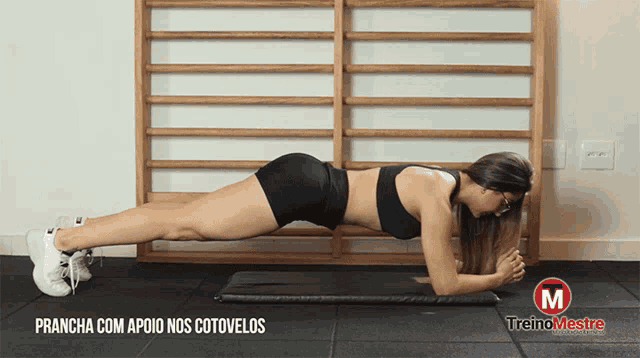
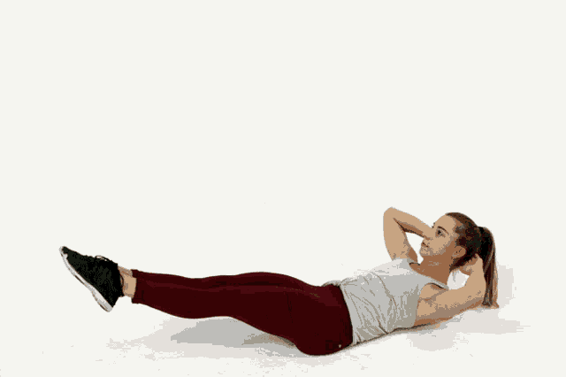
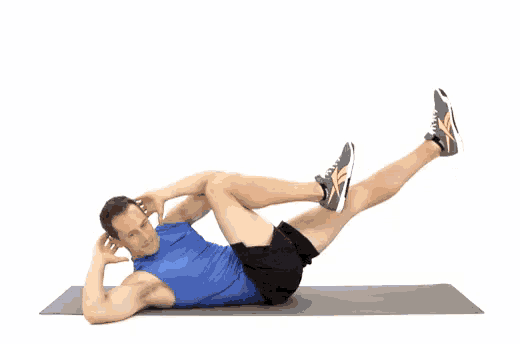

1 - Abdominal Tradicional
Execução: Deite-se de costas com os joelhos flexionados e os pés apoiados no chão. Coloque as mãos atrás da cabeça ou cruzadas sobre o peito. Levante o tronco em direção aos joelhos, contraindo o abdômen, e depois desça devagar.

Dica: Foque em levantar com a força do abdômen, evitando puxar o pescoço para evitar tensões.
2 - Prancha
Execução: Apoie os antebraços e as pontas dos pés no chão, mantendo o corpo alinhado em uma linha reta. Contraia o abdômen e segure a posição por 20 a 30 segundos (ou conforme sua resistência).
Dica: Mantenha o corpo reto e o abdômen contraído o tempo todo, sem deixar o quadril afundar ou subir demais.
3 - Elevação de Pernas
Execução: Deite-se de costas com as pernas estendidas. Levante as pernas até formar um ângulo de 90 graus com o corpo, mantendo-as esticadas, e depois desça devagar sem tocar o chão.
Dica: Esse exercício trabalha a parte inferior do abdômen. Evite arquear as costas, e faça o movimento lentamente para aumentar a eficácia.
4 - Bicicleta no Solo
Execução: Deite-se de costas e levante as pernas, simulando o movimento de pedalar em uma bicicleta, enquanto alterna levando o cotovelo direito em direção ao joelho esquerdo e vice-versa.
Dica: Esse movimento trabalha o abdômen e os oblíquos. Concentre-se em fazer o movimento devagar para sentir a contração e evitar o uso do impulso.